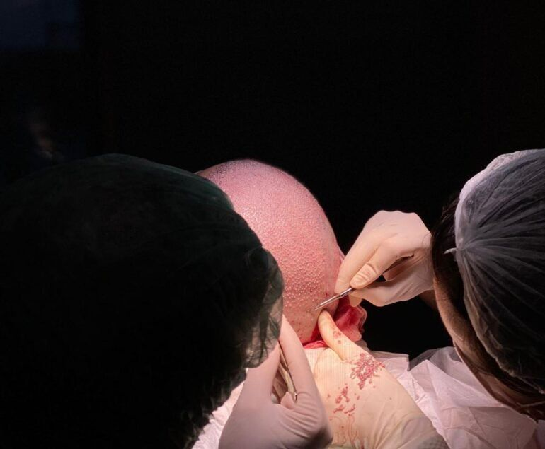
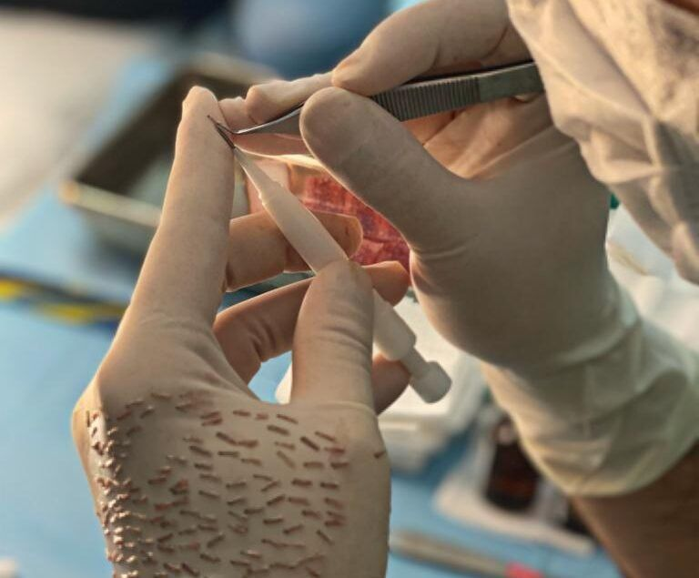
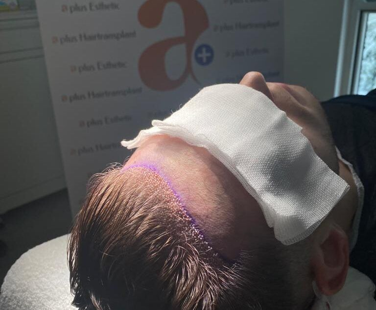
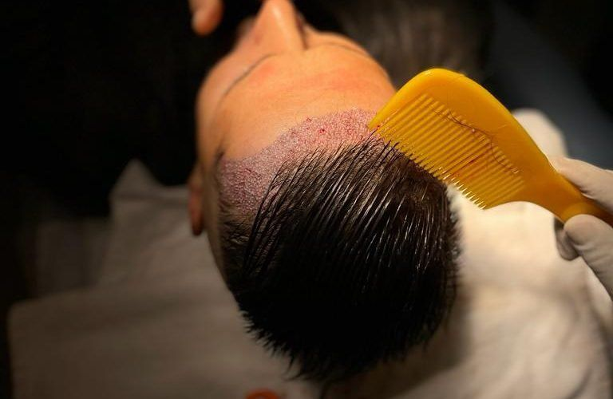
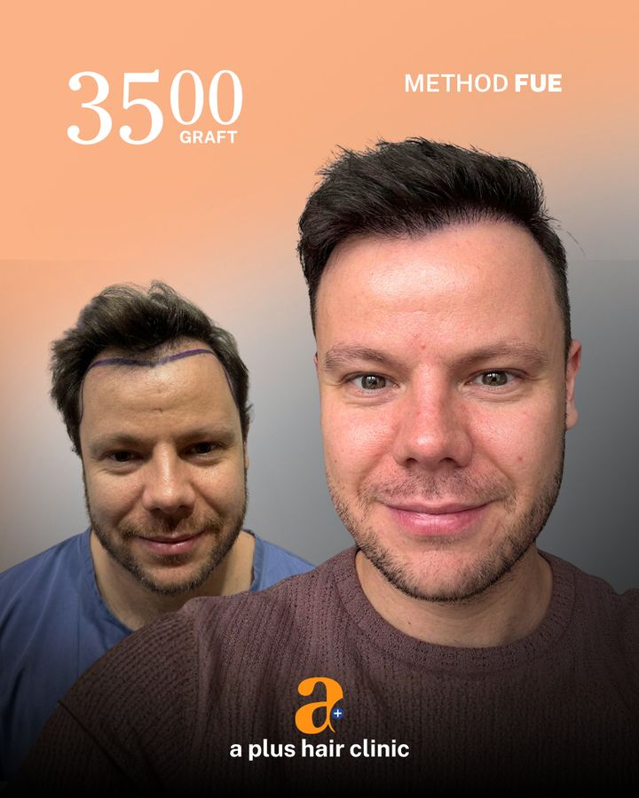
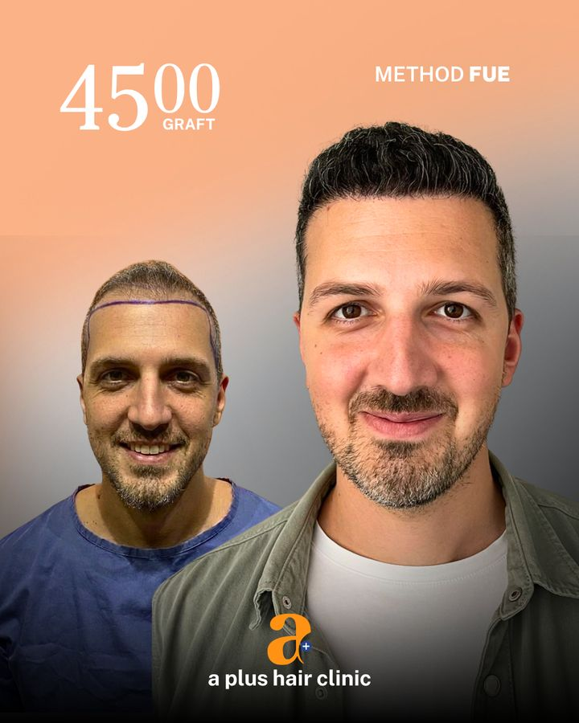
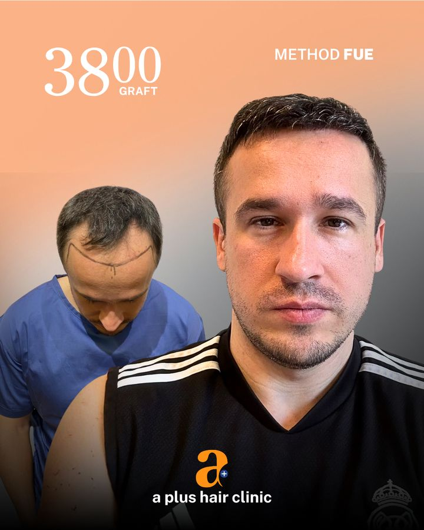
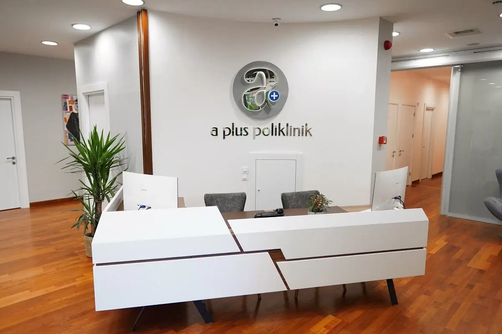

FUE Saç Ekimi
Saç ekimi denince ilk akla gelen yöntemlerden biridir. Saç derisinde kesi yapılmaz, dikiş atılmaz; operasyon sonrasında yara ve kesi izi kalmaz.
2004'ten beri · Erenköy, İstanbul
Hijyenik saç ekim odalarımızda, doktor kontrolünde ve uzman ekibimizle FUE, DHI, tıraşsız ve sedasyonlu saç ekimi yapıyoruz.
Alanında uzman kadromuz sizin için her zaman en iyisini düşünür.
Saç ekimi, hijyenik saç ekim odalarında doktor kontrolünde yapılır.
Operasyon esnasında son teknoloji ekipmanlar kullanılır.
Operasyonlar steril hastane ortamında gerçekleştirilir.
Tedavilerimiz

Saç ekimi denince ilk akla gelen yöntemlerden biridir. Saç derisinde kesi yapılmaz, dikiş atılmaz; operasyon sonrasında yara ve kesi izi kalmaz.

Saç kökleri özel bir iğneyle donör alandan toplanır ve aynı iğneyle ekilir. Kanal açma ve yerleştirme aynı anda yapılır; özellikle dar bir alana sık ekimde tercih edilir.

Saç kökleri mikro motorlarla ense bölgesinden alınır, saçın tıraş edilmesi gerekmez. Saç ekimi yaptırdığının bilinmesini istemeyenler için uygundur.

Saç ekimi çoğunlukla lokal anestezi altında yapılır. Sedasyonlu ekimde, lokal anestezi öncesinde hastaya sakinleştirici uygulanır; özellikle iğne korkusu olanlar için tercih edilir.
Kişiden alınan bir miktar kan santrifüjle bileşenlerine ayrılır; trombositten zengin serum saç derisine enjekte edilir. İşlem en fazla 1–1,5 saat sürer.
Deri altına ince vitamin, mineral ve amino asit karışımlarının enjekte edildiği, cerrahi olmayan bir tedavidir. Saçın kalitesini artırmak için belli aralıklarla uygulanır.
Kadın ve erkeklerde saç dökülmesi tedavisinde kullanılır. Özellikle saç probleminin yeni başladığı erken dönemde uygulanır; sonuçlar kişiden kişiye değişir.
Sakal veya bıyık kaybı yaşayan ya da sakalı çıkmamış kişilere, donör bölgesi yeterli olduğunda uygulanır.
Kaş eksikliği olan, kaşlarını travma nedeniyle kaybetmiş ya da daha dolgun kaşlar isteyenlere FUE yöntemiyle, lokal anestezi altında uygulanır.
Adım adım
Doktor değerlendirmesi ve gerekli tahliller yapılır; saç ekim çizgisi yüz oranlarınıza göre çizilir.
İşlem lokal anestezi altında, gerekirse sedasyonla yapılır.
Ucu 1 milimetreden küçük FUE motoruyla ense bölgesinden saç kökleri (greftler) tek tek toplanır.
Greftler, açılan kanallara doğal saç yönüne ve açısına uygun şekilde yerleştirilir.
Operasyonun ardından PRP uygulaması yapılır.
Saçlar 3. aydan itibaren çıkmaya başlar; çıkış ve kalınlaşma 1 yıla kadar sürer.
Saç ekimi işlemi ortalama 6–8 saat sürer.
Hastalarımızın sonuçları






Sonuçlar kişiden kişiye farklılık gösterebilir.

Hakkımızda
aplus Hairtransplant, 2004 yılından beri İstanbul'un Erenköy semtinde hizmet vermektedir. Hijyenik saç ekim odalarımızda, doktor kontrolünde ve uzman saç ekim personelimizle saç ekimi konusunda profesyonelleştik.
Merak edilenler
Uygunluğunuzu anlamak için mutlaka bir doktor değerlendirmesinden geçmeniz gerekir. Operasyon öncesinde kan grubu tayini, tam kan sayımı, rutin biyokimya, pıhtılaşma testleri (PT, PTT, INR) ile HBsAg, Anti-HBc ve Anti-HIV testleri yapılır. Saçlı deride bir cilt hastalığı varsa önce tedavi edilmesi gerekir. Uygunluğunuz polikliniğimizde uzman hekim tarafından değerlendirilir.
Saç ekimi lokal anestezi altında veya sedasyonla yapıldığı için işlem sırasında acı hissedilmez. Anestezi uygulanırken hafif bir acı hissedilebilir; bunda kişinin acı eşiği de etkilidir. Anesteziden sonra ağrı hissedilmez.
Saç ekimi işlemi 6 ile 8 saat arasında sürer.
Ekilen saçlar ilk 15 gün içinde dökülmeye başlar; bu süreç normaldir. 3. aydan itibaren saçlar yavaş yavaş çıkmaya başlar, 5–6. ayda saçların çoğu çıkmış olur. Saç çıkışı ve kalınlaşma 1 yıla kadar devam eder.
Saç kökleri, dökülmeye karşı dirençli olan ense (donör) bölgesinden alınır. Bu nedenle tepe ve ön bölgeye ekilen saçlar ömür boyu dökülmez.
Bir greftteki saç teli sayısı sabit değildir; ortalama 2 saç teli içerir. Her greft genellikle 1 ile 4 arasında saç teli barındırır.
FUE yönteminde kanal açma sürecini beklemek gerekirken DHI yönteminde doğrudan ekime geçilebilir. DHI özellikle dar bir alana sık ekim yapılması gerektiğinde, FUE ise saçlı deride daha geniş alanlara yapılacak uygulamalarda tercih edilir.
Saç dökülmesi problemi olan 20–65 yaş arasındaki kişiler saç ekimi yaptırabilir. Saç dökülmesinde ne kadar erken çözüme gidilirse o kadar olumlu sonuç alınır.
Saç ekiminde mevsim önemli değildir. Güneş ışınlarından ve yağmur gibi hava koşullarından korunulduğu sürece yılın 12 ayı saç ekimi yaptırılabilir.
Saç ekimi doktor kontrolünde yapılan bir uygulamadır. Güvenilir bir merkezde, uzman bir ekip tarafından yapıldığı sürece güvenilir bir uygulamadır.
İletişim
Aşağıdaki numaradan bize ulaşarak bilgi ve randevu alabilirsiniz. Dilerseniz formu doldurun, size en kısa sürede dönüş yapalım.